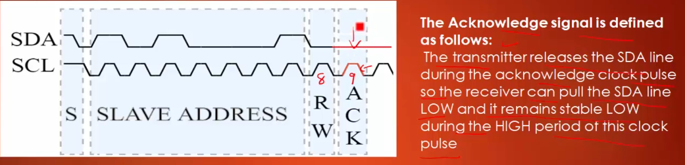
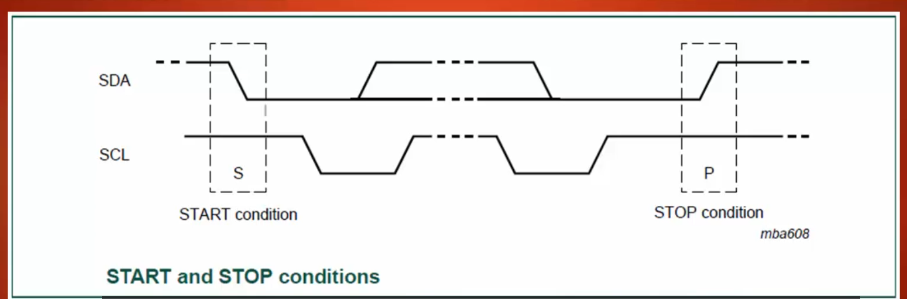
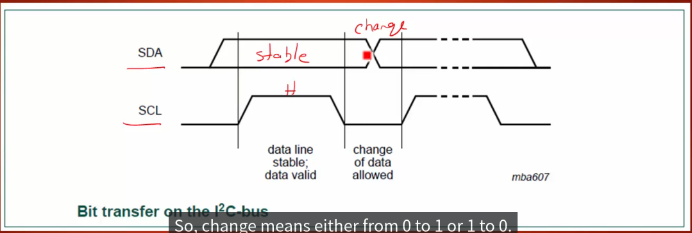
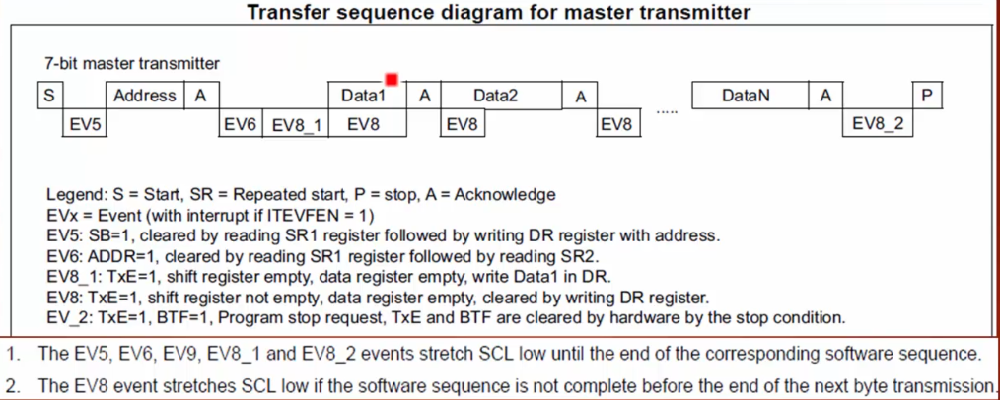

I2C protocol¶
- Multi-master capability
- Automatically ACK every byte received
- I2C master talks to slaves based on slave addresses
- I2C is half duplex
SDA & SCL¶
- Both SDA and SCL are bi-directional lines
- The bus capacitance limits the number of interfaces connected to the bus
Tip: since both SDA and SCL will connect to pull-up register, the default voltage of both pin should be held at high
Mode¶
Standard Mode¶
* Speed up to 100Kbits/s
* the very first mode of specification
* __cannot__ upward compatible
Fast Mode¶
* Speed up to 400Kbits/s
* downward compatible
Fast Mode +¶
Speed up to 1Mbits/s
High Speed Mode¶
Speed up to 3.4Mbits/s
Protocol Message¶
-
start with 8-bit of slave address
-
Each byte must followed by an Acknowledge bit
-

-
if SDA is low during SCL cycle : ACK
> is __SDA__ is high during __SCL__ cycle : __NACK__ -
Data transfer with the most significant bit (MSB) first.
Start(S) and Stop(P) condition¶
High to Low on SDA line while SCL is high defines a start condition
Low to High on SDA line while SCL is high defines a stop condition

Data validaity¶
- The HIGH or LOW state of the data line can only change when the clock signal on the SCL line is LOW (ONLY IN DATA TRANSMISSION)
- 
MASTER TO SLAVE¶
- MASTER receive data from slave
-
Whenever slave receives the ACK from the master, that’s an indication for the slave to send one more byte to the master
-
Whenever master receives the ACK from the slave, that’s an indication for the master that slave has received the data successfully
Repeated Start(Sr)¶
start again without stop
I2C serial clock settings¶
-
divided into standard mode and fast mode
-
in standard mode
-
T_low may equal to T_high
-
in fast mode
-
T_low = 2 T_high, or
-
T_low = 1.8 T_high
-
Clock Stretching
Clock Stretching means that holding the clock to 0 or ground level, to pause the whole I2C interface until clock is given up to it’s normal operation level
There are situations where an I2C slaves is not able to co-operate with the clock speed given by the master and needs to slow down a little.
It’s a hardware support, we do not need to implement the stretching functionality
- Clock control register need to be calculated by following reference manual

- BTF : Byte transfer finished